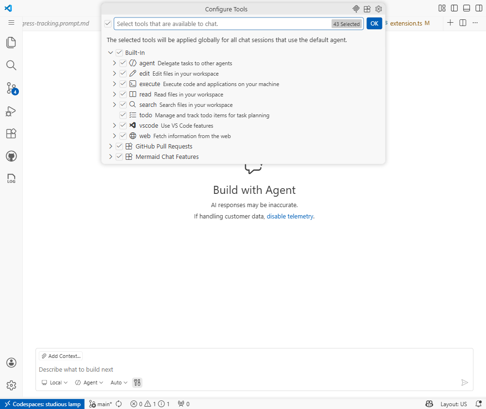

MCP Integration - MCP for You and Me
Discover the Model Context Protocol, connect MCP servers, and work GitHub Issues end-to-end without leaving your editor
What We'll Cover
Today's Journey
- What Is MCP?: The open standard and why it exists
- How MCP Works: Architecture, capabilities, and compatibility
- Setting It Up: Connect and authenticate the GitHub MCP server
- Working With Issues: Read, comment, and update a practice issue
- Discovering MCP Servers: Find and evaluate maintained servers
- Security and Trust: Credentials, permissions, and approvals
- Live Demo: An end-to-end issue workflow from Copilot Chat
- Hands-on Lab: Guided exercises alongside the session
What Is MCP?
The Problem MCP Solves
- AI assistants need tools and context to work with information outside their current conversation
- Developers switch between editors, issue trackers, CI dashboards, and documentation
- Separate custom integrations create an N × M problem: every tool integrated with every host
- MCP standardizes the connection; it complements existing built-in and extension tools
graph LR
Host[AI Host] --> Client[MCP Client]
Client --> Server[MCP Server]
Server --> Issues[Issues]
Server --> CI[Build and CI]
Server --> Docs[Documentation]
The Model Context Protocol
- MCP is an open standard for connecting AI applications to external tools and data
- Think of a USB-C port for AI: a shared interface, not a guarantee of identical capabilities
- Servers can expose tools (actions), resources (context), and prompts (templates)
- Compatibility depends on the host, protocol version, transport, and supported capabilities
- The MCP Registry at
registry.modelcontextprotocol.iopublishes server metadata
How MCP Works
graph LR
A[Host / IDE] --> B[MCP Client]
B --> C[MCP Server]
C --> D[Tools]
C --> E[Resources]
C --> F[Prompts]
The MCP Architecture
- Host: the application coordinating AI, context, and permissions
- Client: a component in the host communicating with one server
- Server: a local process or remote service exposing MCP capabilities
graph LR
subgraph Host[VS Code Host]
Chat[Copilot Chat] --> G[GitHub MCP Client]
Chat --> D[Database MCP Client]
end
G --> GitHub[Remote GitHub Server]
D --> Database[Database Server]
What MCP Servers Expose
Tools
Model-selected actions, such as GitHub's list_issues, add_issue_comment, or issue_write. Availability and approval depend on configuration.
Resources
Server-provided context. Use Add Context > MCP Resources or MCP: Browse Resources when supported.
Prompts
Server-provided templates. A supported prompt appears as /<server>.<prompt> in chat.
Not every server or session supports every capability.
Capability Support and Elicitation
Elicitation
A supported server can request input through a form or direct you to an external URL. Review the requesting server and decline unexpected requests.
Legacy sampling
Sampling let servers request model generations through the client. It is deprecated in the 2026-07-28 protocol revision, not removed from all existing clients.
- Never enter passwords, API keys, or access tokens into an elicitation form
- Sensitive sign-in belongs in a trusted, supported out-of-band flow
- Host support and configured permissions determine the interaction you see
How Servers Connect
| Connection or format | What to know |
|---|---|
| stdio | A client launches a local process and exchanges JSON-RPC messages over standard input/output |
| Streamable HTTP | A service exposes an HTTP endpoint; follow its documented authentication requirements |
.vscode/mcp.json or profile mcp.json | VS Code format: top-level servers |
Workspace-root .mcp.json | Portable format: top-level mcpServers; different supported fields |
Today: GitHub's hosted HTTP service. OAuth is supported, not a universal requirement of every remote server.
Setting It Up
Enabling the GitHub MCP Server
- Confirm AI access, GitHub sign-in, repository access, and organization policy
- Run MCP: Add Server; choose HTTP
- Enter
https://api.githubcopilot.com/mcp/; name itgithub - Choose Global > Copilot Global for personal use, or a supported workspace destination for sharing
- Review startup/trust prompts and complete the GitHub sign-in flow
For a VS Code-format workspace connection, use .vscode/mcp.json:
{
"servers": {
"github": {
"type": "http",
"url": "https://api.githubcopilot.com/mcp/"
}
}
}Verifying the Connection
- Open Chat and explicitly select Agent
- Copilot harness: Chat: Open Customizations > Tools; Local harness: Configure Tools
- Enable needed GitHub tools, such as
list_issuesandissue_read - Ask for open issues in a named practice repository, without making changes
- Expand the call: confirm the intended server, inputs, and returned issue data
- For errors: MCP: List Servers > github > Show Output
The existing Local tool-picker image illustrates selection, not proof of a GitHub connection.

Working With Issues
Reading Issues From Chat
- Ask: "Use the GitHub MCP server to list open issues in my practice repository. Do not change anything." Include the owner and repository name
list_issuescan list issues;issue_readretrieves issue details or comments- Inspect the returned data before relying on Copilot's summary
- Try a narrower request by label, assignee, or date; tool choice depends on the request

Acting on Issues
- Use a practice repository and disposable issue; confirm owner, repository, and issue number
- Ask to draft a comment first, then authorize that exact comment
add_issue_commentposts comments;issue_writewithmethod: updatecan update an issue- Use Manual permissions and review approval settings; auto-approval or Allow all can bypass prompts
- Read the issue again to verify the result; MCP does not guarantee a complete audit log
Code Search With MCP
- Ask: "Use GitHub MCP to search for AuthService in this named repository. Report matching files and links."
search_codesupports repository and organization scope, such asrepo:owner/repository- Results can include matching snippets and file metadata; formatting depends on the tool and host
- Search can span repositories you can access, subject to API limits and pagination
- Text search is not a guarantee of finding every semantic usage; inspect the related code before changing it

Discovering MCP Servers
The MCP Registry
registry.modelcontextprotocol.iois an official server metadata registry, currently in preview- Entries describe publishers, packages or remote endpoints, and installation metadata
- Downstream catalogs add discovery experiences; VS Code's MCP gallery is one way to browse
- Use MCP: Add Server or search
@mcpin the Extensions view - Check publisher docs, maintenance, access requirements, and supported clients; a listing is not security approval
Installing a Registry Server
Reuse a maintained publisher endpoint. Portable workspace-root .mcp.json:
{
"mcpServers": {
"github": {
"type": "http",
"url": "https://api.githubcopilot.com/mcp/"
}
}
}- This is an alternative to slide 13's VS Code-format file; choose one destination
- The guided workspace-root destination currently uses experimental
chat.mcp.workspaceRootConfig.enabled - Review configuration before trusting the workspace; complete authentication and verify a read-only call
- Commit only non-secret definitions; teammates still need their own credentials, access, and any runtime prerequisites
The MCP Ecosystem
Community MCP Servers
Data
Database integrations can expose queries or schemas. Capabilities and write access depend on the selected server; old reference packages may be archived.
APIs & Services
Atlassian, Slack, Linear, and Notion provide integrations for work items, messages, or documents. Check each publisher's supported tools.
Infrastructure
Docker, Kubernetes, AWS, and Azure ecosystems offer MCP integrations. Treat deployment and administration as advanced, permission-sensitive work.
Security and Trust
Securing Your MCP Setup
- Configuration trust: local stdio servers can execute code in their host environment
- Authentication: service credentials and account permissions limit access
- Tool availability: enable only the capabilities needed for the task
- Action approval: permission modes and auto-approval settings determine when prompts appear
- Least privilege: prefer read-only access first; disable servers you no longer need
Security Best Practices
- Review the source: publisher, endpoint or command, maintenance, and requested access
- Treat tool output as data: issue text does not authorize new goals, secret disclosure, or unrelated writes
- Keep secrets outside committed files: an
envobject does not hide literal credentials - Use format-specific references: portable
${NAME}; VS Code${env:NAME}. Supply values in the host environment - Inspect actions: review tool-call details and results; redact logs before sharing
- Respect organization policy: local configuration cannot override an enterprise restriction
MCP in Action
Demo: End-to-End Issue Workflow
- Name the practice owner/repository and ask GitHub MCP to list open issues without changes
- Pick a disposable issue; read its details and comments and verify the summary
- Search related code and inspect the matches before proposing a fix
- Review and test any proposed fix; draft, review, then authorize a comment on the exact issue
- Only if appropriate, authorize closing the practice issue; read it back to verify the state
Demo: Combining MCP With Chat
- Ask: "Summarize five recently closed issues in this named repository and identify recurring themes. Do not make changes."
- Check the issue links, ordering, and any additional calls needed for comments
- Follow up: "Based on that evidence, suggest improvements and explain what still needs verification."
- MCP + model reasoning: external evidence supports analysis, not automatic correctness
Wrap-Up & Next Steps
Key Takeaways
- MCP standardizes connections to external tools and context
- Connect and authenticate GitHub's hosted server; built-in client support is not a ready-made connection
- Verify the tool call, its inputs, and its returned data
- Match the configuration format: portable
mcpServersversus VS Codeservers - Share definitions, not secrets; teammates still need prerequisites and access
- Security first: review publishers, minimize permissions, and inspect intended writes
Where to Go Next
- Prompts, Instructions, Skills, and Agents: the building blocks of Copilot customization
- MCP Maximizer: custom servers and enterprise-scale deployment
- MCP Specification: capabilities and current deprecations
- VS Code MCP Docs: current setup and verification
- GitHub MCP Server: maintained endpoint, tool list, and installation guidance
Thank You
Questions? Reach out on Teams or open an issue.